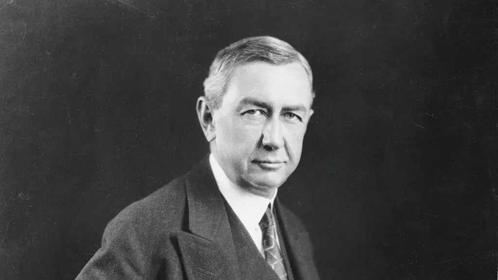

Public Relations (PR) is the art of communication and it's about shaping how people see a brand, a company, or a person. I am passionate about helping brands connect with the world through clear, honest, and compelling storytelling.
| Photo | Name | Organization | Link |
|---|---|---|---|
| Harold Burson | Burson-Marsteller | Learn More | |
| Richard Edelman | Edelman PR | Official Site | |
|  | Ivy Lee | Modern PR Pioneer | Read Bio |
Hi! I'm Iman Amisha binti Zubir Azahar, a New Media Communication student currently pursuing my dream of becoming a Public Relations professional. I believe that communication is the heart of leadership, and I want to help organizations tell their stories in a meaningful way.
I love reading and building relationships with people. This website is a small but important step on my journey toward making an impact in the PR world. Thanks for visiting!
You can reach me via email at: amisha3800@gmail.com or follow me on Instagram imanoxo_